Lo studio dei resti
dell'acquedotto:
Theodor Mommsen

La scoperta e l'interpretazione dell'editto augusteo di Venafro
Christian Matthias Theodor Mommsen nasce a Garding nel 1817. E' stato filologo, storico, linguista, giurista, epigrafista, numismatico, professore e politico.
Appassionato di Roma antica, ha scritto nel corso degli anni il suo capolavoro che gli valse il Nobel per la letteratura nel 1902, la Storia di Roma. In essa lo studioso, attraverso la disamina rigorosa delle fonti e un'esposizione semplice e diretta, fa comprendere a chi legge la vera essenza della Roma repubblicana.
Nel suo primo viaggio in Italia nel 1846, Mommsen arriva a Venafro per studiare le epigrafi latine della colonia iulia augusta Venafrum. Il giovane venafrano che gli fa da guida lo porta a vedere una grossa lastra murata in una masseria alle porte della città. Liberata parzialmente dalle pietre e dalla terra che la ricopriva, viene letta e interpretata dallo storico come l'editto imperiale attraverso cui si normava la gestione dell'acquedotto che approvvigionava la colonia in epoca augustea.
Mommsen muore a Charlottenburg nel 1903.
Istruzioni per l'uso
Timeline e presentazione
Se stai aprendo la pagina su desktop puoi scorrere le slide attraverso le frecce di avanti e indietro.

Se stai visualizzando la pagina su smartphone/tablet per fruire della presentazione, scorri con le dita sullo schermo come se volessi sfogliare un libro.
